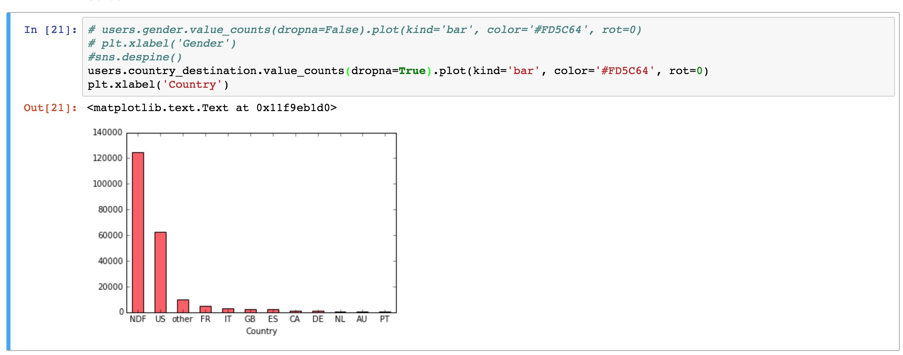
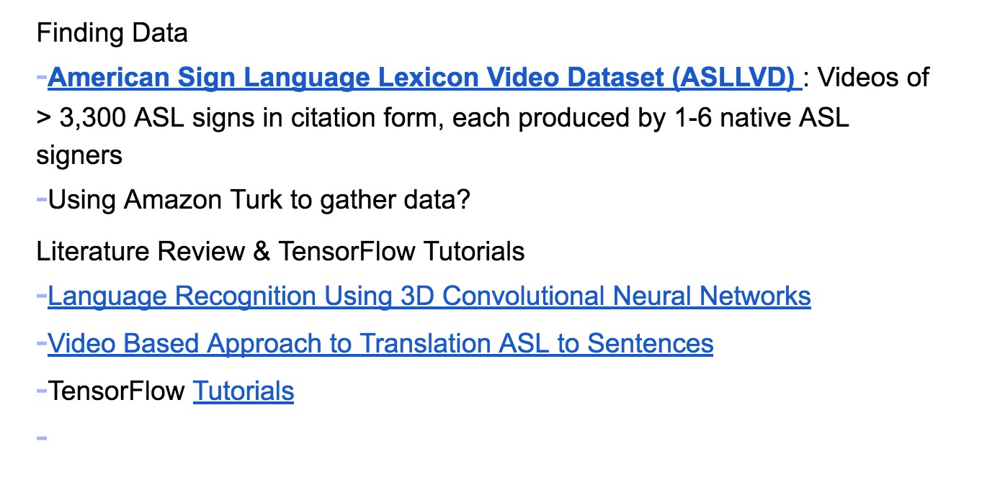
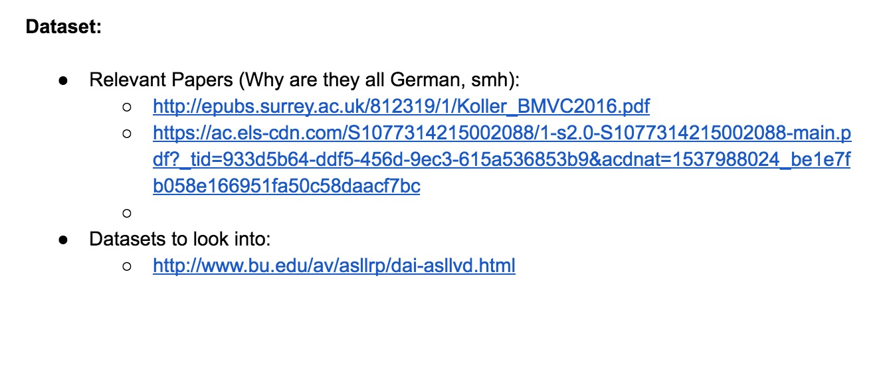

The lack of consistency in some of the datapoints would make this difficult to run through a net. For example, in respect to the gender there's a lot of "unknowns." There are also a ton of ages that are left blank
For the most part this dataset seems like it'd be a good indicator of whether some factors might make someone lean more towards one country than another. But things that aren't taken into account that I think are more important is the fact that none of these factors usually influence what country an individual might lean towards. For example, usually the affordability of the country should be taken into account, or the prior search history of the user, or the time of year even.
Below a quick visualization we can do is check where people in the US want to travel the most (at least according to this dataset). It seems that they mostly like to stay at home, and travel internally. (ignoring the NDF which means there wasn't a booking)
We ended up putting together a sort of guideline for our project rather than a paragraph, with everything from data collection to datasets:
 